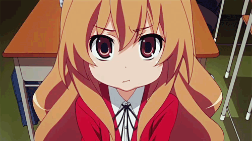

Tonikaku Kawaii
Conta a história de Nasa Yuzaki, um menino com um nome peculiar, é atropelado por um caminhão no dia de seu vestibular. Ele encontra uma linda garota que o salva e ele passa a segui-la, confessando seu amor por ela em um ponto de ônibus.

Kaguya-sama Wa Kokuraseta
Conta a história de doi membros do Concelho Estudantil da Academia Shuchi'in, Shinomiya Kaguya e Miyuki Shirogane. Os dois sendo gênios entre os gênios. O tempo que eles passam juntos acabou fazendo com que se apaixonassem, mas o orgulho deles não vai permitir eles se confessem e se tornem submissos no relacionamento!

Love Hina
A história gira em torno de um garoto desajeitado vai parar num pensão para mulheres. Pode-se dizer que Keitarô Urashima não é a pessoa mais sortuda do mundo. Aos 19 anos, jamais beijou uma garota e já bombou três vezes no vestibular da Toudai, a concorrida Universidade de Tóquio. Desiludido, ele sai de sua casa e vai para a Pensão de sua avó.

Saenai Heroine No Sodatekata
A história se desenrola em volta de um otaku chamado Tomoya Aki. Um dia, nas férias, ele vê uma garota durante o seu emprego a tempo parcial para obter dinheiro para comprar Blu-rays de anime e decide criar um jogo de simulação romântica com ela.

Josee To Tora To Sakana-tachi
A história se concentra no relacionamento entre Tsuneo e Josee. Tsuneo é uma estudante universitária e Josee é uma jovem garota que raramente sai de casa sozinha por não poder andar. Os dois se encontram quando Tsuneo encontra a avó de Josee levando-a para uma caminhada matinal.

Nogizaka Haruka No Himitsu
Conta a história de Ayase Yuuto, um garoto normal sem nenhuma característica especial. Ele estuda em uma escola de ensino médio privada onde ele é um de muitos e não se destaca no meio da multidão, até que, um dia, ele acaba descobrindo o segredo da princesa da escola, Nogizaka Haruka, e sua vida muda drasticamente daí em diante.

Toradora
Conta a história de Taiga Aisaka e Ryuuji Takasu, dois colegas de classe que mal se conhecem e vivem em pé de gerra, até que um dia Taiga resolve declarar o seu amor por Yusaku Kitamura, melhor amigo de Takasu, colocando uma carta em sua mochila ao final da aula, mas por ironia do destino Taiga acaba errando o lugar de Kitamura e a carta vai parar nas mãos de Ryuuji. Quando descobre o erro ela fica desesperada e resolve pegar a carta de volta e, depois de muita confusão, descobre que Ryuuji está interessado em Minori Kushieda, melhor amiga de Taiga. Os dois fazem uma trégua e um acordo para que se ajudem a conquistar os seus objetivos amorosos.
Tsurezure Children
A história retrata vários cenários de jovens amores. As histórias vão de um garoto, que afetado por sua falta de confiança em si mesmo, não consegue nem aceitar que a garota de seus sonhos o convidou para sair, até uma garota quase insana, que coloca seu próprio sangue em chocolates caseiros para ganhar o coração dele

Bunny Girl Senpai
A história gira em torno da vida do estudante Sakuta Azusagawa, que teve uma reviravolta inesperada quando ele conhece a atriz adolescente Mai Sakurajima, vestida como uma coelhinha erótica e vagando por uma biblioteca sem ser notada por mais ninguém além de Sakuta.

5-Toubun No Hanayome
A história é sobre um estudante de segundo grau Futaro Uesugi é um estudante dotado academicamente que leva uma vida difícil: Sua mãe morreu, ele não tem amigos e, além de tudo isso, seu pai contraiu muitas dívidas.
Uma oportunidade se apresenta quando a rica família Nakano se transfere para sua escola. Futaro é prontamente contratado como tutor bem pago. No entanto, para desespero de Futaro, ele descobre que cinco irmãs quíntuplas idênticas de personalidades variadas não têm interesse em estudar e têm notas péssimas. Alguns das quíntuplas são contra a presença de Futaro, a quem consideram um estranho, em seu apartamento, mas a tenacidade diligente de Futaro aos poucos convence essas meninas a aceitá-lo e a melhorar suas notas.